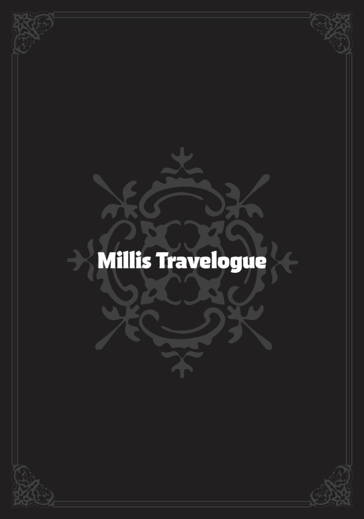

Zaman su gibi akıp geçti ve ben ne olduğunu anlamadan on günümüz dolmuştu. İlk gün, saygılarımı sunmak için katedrale gittim. Zenith orada Kutsanmış Çocuk’la görüşmüştü; Kutsanmış Çocuk da güçlerini kullanarak Zenith’in ne söylediğini bize aktardı. Bizimle gelen Claire, görüşmenin yarısında hüngür hüngür ağlamaya başladı. Benim de gözlerim dolmuştu ama Zenith her zamanki gibi mutlu göründüğünden kendimi tuttum.
Canı sıkkın görünen çocuklar dışarıda bekliyordu ama ben papayla ve Kutsanmış Çocuk’la sohbete dalmıştım. Sonuçta iş beklediğimden uzun sürdü. Benim yerimde başkası olsa suçu, antrenman ve diyet düzenini uzun uzadıya anlatan Kutsanmış Çocuk’a atardı. Nasıl daha ince bir vücuda kavuştuğunu anlatırken gururla sırıtıyordu.
Tahmin ettiğim gibi çocuklar huzursuzlanınca Aisha, Arus, Lara ve Sieg’i Maceracılar Loncası Genel Merkezi’ni görmeye götürdü. Eve ne kadar geç döndüklerine ve Arus’un yüzündeki ifadeye bakılırsa bir tür belaya bulaştıklarını hissetmiştim. Gerçi Aisha durumu halletmiş gibiydi.
Lucie’nin geride bırakıldığı için sinirlendiğini düşünebilirsiniz ama hiç de öyle değildi. O ve yine geride kalan Clive, katedralin içini ağızları açık gezmişlerdi. Bu ona yetmiş gibi görünüyordu. Belki de bahçeleri seviyordu ya da Clive’ın arkadaşlığı onu sarmıştı. Bana çiçekler hakkında belirli bir şey söylememesinden yola çıkarak ikincisi olduğuna kanaat getirdim.
Onu daha fazla sorgulamak istedim ama kendimi tuttum. Şimdilik tek yapabileceğim Clive’ın dürüst bir genç adam olmaya devam etmesini ummaktı.
İkinci, üçüncü ve dördüncü günler insanları ziyaret etmekle geçti. Ejderha Tanrısı’nın müridi Rudeus Millishion’daydı; ziyaret turlarımı yapmam gerekiyordu. Ziyaretlerim Misyoner Şövalyeleri’nin kaptanını ve Latria ailesinin yan kollarını, yani teyzelerimle amcalarımı kapsıyordu. Elbette Therese de buna dahildi. Ne yazık ki, görünüşe göre hâlâ evlenmemişti.
Ondan sonra papayla resmi bir görüşme yaptım. Ardından Millis kraliyet ailesiyle, daha doğrusu tahtın beşinci sıradaki varisi olan prensle tanıştırıldım. “Prens” unvanının yarattığı imaja rağmen, adam kırklarındaydı. Sinir bozucu bir şekilde, kralla görüşmem birkaç gün sonraya ayarlandı. Ejderha Tanrısı adına saygılarımı o zaman sunacaktım. Orsted, Millis kraliyet ailesiyle bağ kurmanın bekleyebileceğini ama sadece bir görüşmenin sorun olmayacağını söylemişti.
Tatile çıkıp neden çalıştığımı merak edebilirsiniz ama bu gezinin amacı çocukların farklı kültürleri görmesini sağlamaktı. Bu yüzden dert etmedim.
Beşinci gün, Cliff’in yeni bebeğini teslim etmeye gittim. Meğer paylaşacak güzel haberleri varmış. Son beş yıldaki çalışmaları üstlerini etkilemiş ve —henüz resmi olmasa da— piskopos olacaktı. Normalde gençliği buna engel olurdu ama Cliff’in piskoposluk bölgesinin sıra dışı konumuyla ilgili bazı siyasi durumlar vardı.
Cliff, Büyük Orman’ın güney ucunda bir bölgeden sorumluydu. Ben zamanında seyahat ederken orası isimsiz bir han kasabasından ibaretti. Son on yıl kadar bir sürede nüfusu artmış, kasaba da nüfusla birlikte büyümüştü. Kasaba herhangi bir ülkeye veya ırka ait değildi, ama büyüdükçe kimin nerede yetki sahibi olduğu sorunu ortaya çıktı. Çeşitli ırkların temsilcileri, kendi çıkarlarını müzakere etmek için kasabada toplandı.
Millis Kilisesi’nin gönderdiği temsilci bir başpiskopostu; kardinalin sağ kolu olarak bilinen iblis sürgüncüsü hizbinin bir üyesiydi. Kendisi bir insan üstünlükçüsüydü ve sadece iblisleri değil, canavar halkı gibi diğer ırkları da küçümsüyordu. Bağnazlığına rağmen kurnaz ve işinde iyiydi; tam da kilisenin, kasabadaki çeşitli çıkarları kendi lehine çevirebileceğine güvendiği türden biriydi. Ancak eğilimleri göz önüne alındığında, Büyük Orman’da yaşayan ırklarla ilişkilerine zarar verme ihtimali vardı ve bu da yalnızca iblis sürgüncülerinin en radikal üyelerinin istediği bir şeydi.
İşte bu yüzden Cliff seçilmişti. Cliff sadece iyi bağlantılara sahip, ön yargısız ve papanın hizbinden biri olmakla kalmıyor, aynı zamanda üyeleri arasında pek çok canavar halkından kişinin bulunduğu Ruquag Paralı Askerleri’yle de arası iyiydi ve Doldia Kabilesi’nin kan bağı olan akrabalarıyla yakındı. Bu yüzden onu daha yüksek bir rütbeye terfi ettirmeye ve başpiskoposa göz kulak olması için ona eşlik etmesini sağlamaya karar verildi.
Cliff, insanların onu sırf liyakatine dayanarak yükselttiğini düşünmememiz gerektiğini hayıflanarak belirtti. Yine de kasabadaki işi bittiğinde hem ismen hem de cismen bir piskopos olacaktı, bu da ona çok daha büyük bir yetki kazandıracaktı. Eğer Büyük Orman halklarıyla iyi ilişkilerini sürdürebilirse, bu durum bir elfi eş olarak alması için bir bahane sağlayacaktı. Durum böyle olursa, Elinalise ve Clive’ı Millis’te kendisiyle yaşamaya davet edebilirdi.
Bu noktaya geldiğinde, bebeğin terfisi için de bir kutlama hediyesi olabileceğini düşündüm ve büyük sürprizi yaptım.
Cliff resmen küplere bindi. Şu an bir kadına abayı yaktığını birilerinin öğrenmesinin felaket olacağını söyledi. Yine de bebeği almayı reddetmedi, bu yüzden memnun kaldığını düşündüm. Hatta bebeği hareket ettiren büyü çemberlerinin ince detaylarını ilgiyle inceledi. Her neyse, Sylphie’nin de belirttiği gibi, en kötü ihtimalle bebeğe güneş gözlüğü takıp erkek kıyafetleri giydirebilirdik. Savaş yetenekleri vardı, bu yüzden piskoposluk görevleri sırasında kişisel savunması için onu iyi kullanacağını umuyordum. Gidişata bakılırsa başpiskoposun ona suikast düzenletmeye kalkışması kuvvetle muhtemeldi.
O gün eve döndüğümde Claire’in keyfi yerindeydi. Anlaşılan Lara, onun yaklaşık bir yıl önce kaybettiği bir madalyonu bulmuştu. Tatlı bir hikâye, değil mi? Kızımın ne yaptığını duymak bir ebeveyn olarak beni gururlandırdı… gerçi madalyonu muhtemelen Leo bulmuş olsa da. Roxy de ebeveynlik konusunda ekstra motive olmuş görünüyordu. Bütün çocuklar okula başladığı için onlara daha yakından göz kulak olmanın kendisine düştüğünü söylüyordu. Roxy enerjik olduğunda çok sevimliydi ama aynı zamanda aşırı heveslenip hata yapacak tiplerdendi, bu yüzden beni geriyordu.
Sylphie ve Norn, Lucie ile Clive’ı Maceracılar Loncası’na götürmüşlerdi. Lucie, öğle yemeğinde yedikleri muhteşem yemeği ışıl ışıl parlayan gözlerle anlatıyordu, ama loncanın kendisiyle pek de ilgilenmiş gibi görünmüyordu.
Altıncı günden sekizinci güne kadar özel bir plan yapmadım. Alışverişe çıktık, çocuklara gezilecek yerleri gösterdik ve bir at arabasıyla şehrin dışına çıkarak yakındaki çiftlikleri görüp derelerde oynadık. O gün kimin canı ne istiyorsa onu yaptık.
Dokuzuncu gün, kralla bir görüşmem vardı. Millis kralı, iyi kalpli bir yüze sahip yaşlı bir adamdı. Burada kilise çok fazla güce sahipken hükümdar nispeten zayıftı. Kilise ile aram iyi olduğu için görüşme beklenen formalitelerin ötesine geçmedi. Çocuklara kalenin içini göstermek istemiştim ama sonunda vazgeçtim. Her istediğin olmuyor işte.
Millishion’daki zamanımızı sonuna kadar değerlendirdiğimizi söylemek yanlış olmazdı.
Onuncu gün yola çıktık. Planımız, Kutsal Kılıç Yolu boyunca kuzeye doğru at arabalarıyla gidip kaplıcalara ulaşmaktı.
Tam ayrılmak üzereyken Claire başımın etini yemeye devam etti. “Büyük Orman’ın sınırında canavarlar olmaz ama han kasabalarının tekin olmayan tiplerle dolu olduğunu duyuyor insan. Senin için zor olmayabilir ama çocuklara karşı dikkatli olmayı ihmal etmemelisin.”
Son görüşmemizde ona işime karışmamasını söyledikten sonra epey sessiz kalmıştı. Onuncu güne gelindiğinde ise çok daha fazla nutuk çekiyordu. Yine de o kadar da zahmetli değildi. Sanki sınırı nasıl aşmayacağını çözmüş gibiydi.
Ancak ayrılık vakti geldiğinde bir kez daha Norn’a döndü.
“Seninle bu ziyaret sırasında pek konuşma fırsatımız olmadı,” dedi. “Bir şey söylememde sakınca var mı?”
Norn, yüzünde ‘Hah, başlıyoruz yine’ der gibi bir ifadeyle, sesli bir şekilde, “Pekâlâ,” dedi.
Son on gündür Claire’den kaçınıyordu. Ruijerd’in ona ailesine değer vermesi yönündeki talimatları da bir işe yaramamıştı anlaşılan. Onu suçlayamazdım. Claire ile bir sohbete girerse, Claire Ruijerd’e hakaret edebilirdi ve o zaman Norn’un da karşılık vermekten başka çaresi kalmazdı. Claire’in ne kadar inatçı olduğu düşünülürse, söylediklerini geri almayı reddetme ve tüm olayın büyük bir kavgaya dönüşme ihtimali yüksekti.
“Sen artık ne bir Latria ne de bir Greyrat’sın,” dedi Claire.
“Evet.” Norn’un gözlerinde sert bir bakış vardı. Hiç şüphe yok ki bir iblisle evlendiği için fena halde azarlanacağını düşünüyordu. Claire’in ses tonu kesinlikle yeterince iğneleyiciydi. Ben bile korkunç bir şey söyleyeceğinden emindim.
“Superdia ailesine gelin gittin ve artık bir annesin. Ona göre, vakarla hareket et ve kendini tamamen kocana ve ailene ada.”
“Ne?” Beklenmedik bir şekilde, Claire’in söyledikleri son derece makuldü. Gerçi söyleyiş tarzı bunu biraz emir gibi göstermişti. Sözlerine devam etti: “İblis gelenekleri hakkında pek bir şey bilmiyorum, ama bir iblisin karısının da tıpkı bizimkiler gibi çocuk doğurma ve aileyi gözetme sorumluluklarını taşıması gerektiğini tahmin ediyorum.”
Norn sessiz kaldı.
“Anladın mı?” diye sordu Claire.
“E-evet!” Norn yelkenleri suya indirmiş gibi ağzı açık kalmıştı ama sonunda Claire’e ciddi bir baş selamıyla cevap verdi.
Claire de omuzlarından bir yük daha kalkmış gibi tatmin olmuş bir halde başıyla onayladı. Son on günde Claire’in biraz değiştiğini hissettim. Ayrıca son birkaç günde Roxy ve Lilia’nın da çok rahatladığını sezmiştim; belki de Claire’deki bu değişime bir tepki olarak. Ben evde yokken aralarında kesinlikle bir şeyler geçmişti. Özellikle Roxy ve Claire, geldiğimiz zamankinden çok daha yakın görünüyorlardı.
Claire’in artık iblislere karşı ayrımcılık yapmıyor olmasına sevinmiştim. Ne de olsa ayrımcılık, birini sadece konuşarak vazgeçirebileceğiniz bir sorun değildi. Neyse ki, Aisha ile aralarındaki durum her zamanki gibi kötü olsa da, Norn ile arasındaki kötü hislerin bir kısmı çözülmüş gibiydi.
***
Millishion’dan kuzeye doğru yarım günlük bir yolculuktan sonra Mavi Ejderha Dağları’nın eteklerine vardık. Orada at arabalarını durdurup çocukları dışarı çıkardık. Bir an dinlenmek için durup geldiğimiz yöne geri baktık.
Göz alabildiğine yeşil tarlalar uzanıyordu. Tarlaların arasından mavi bir nehir akıyor ve son on günümüzü geçirdiğimiz Millishion şehrine ulaşıyordu. Kralın Beyaz Saray’ını, katedralin parıldayan altın rengini ve Maceracılar Loncası’nın ışıldayan gümüşünü görebiliyordum. Eris ve Ruijerd’le bu manzaraya baktığımdan bu yana neredeyse yirmi yıl geçmişti. O zamandan bu yana küçük binalar ve orada yaşayan insanlar değişmiş olmalıydı ama manzara neredeyse tamamen aynı görünüyordu.
“Fena değil, ha?” dedim. Bu dünyada böyle geniş manzaralar nadir değildi ama insanın az önce yürüdüğü yerleri uzaktan görme fırsatı pek olmazdı.
Bu kesinlikle derin bir deneyim olacak, diye düşündüm çocukların tepkilerini görmek için arkamı dönerken. Her birinin kendine özgü bir tepkisi vardı.
“Aahh!” Lucie saf bir şaşkınlık nidası attı ve yüzünde bir gülümseme belirdi. Son zamanlarda ablalık rolünü ciddiye alıyordu ama böyle anlarda yine masum küçük bir kıza dönüşüyordu.
Ve—bak sen! Görünüşe göre Clive onun elini tutup tutmamakta tereddüt ediyordu. Sonunda tutmadı. Bunun yerine, Lucie gülümseyerek ona dönüp, “Harika değil mi?” dediğinde, kıpkırmızı kesilip, “Y-yok canım, o kadar da değil,” diye ağzından kaçırdı. Tam bir erkek çocuğu işte.
Onu izlerken gülümsemeden edemedim. Bir zamanlar ben de böyleydim… ya da değil miydim? Aslında, muhtemelen değildim.
Aslında Cliff de bizimle gelmişti. Resmi olarak, resmi ziyaretinden önce han kasabasındaki kiliseye bir göz atması söylenmişti ama bunun sadece bir bahane olduğundan oldukça emindim. Papa, Elinalise ile biraz vakit geçirebilmesi için işleri ayarlamıştı.
“Büyüyünce burada yaşamak istiyorum,” dedi Lara, baygın gözlerini birkaç saniyeliğine irileştirerek. “Çok fazla tatlı var.”
Daha önce at arabasındayken Roxy, Claire’in onu şımarttığını söylemişti. Her gün tatlı ikramlarıyla beslenerek gezinin o kısmını keyifli bir hülya içinde geçirmişti. Yola çıkmadan öncesine göre biraz daha yuvarlaklaşmış gibiydi. Tek kelime etmeden önünüze ikramların geldiği bir cennette kim yaşamak istemezdi ki?
“Hey, baba. Sen ve Kızıl Anne daha önce buraya gelmiştiniz, değil mi?” diye sordu Arus.
“Doğru. Ben şimdiki yaşından biraz daha büyüktüm.”
“Hımm.” Yumruklarını sıkarak başını salladı. Muhtemelen bir maceracı olarak geleceğinin hayalini kuruyordu.
“Hey, Anne! Anne! Şu Nikolaus Nehri, değil mi?” diye sordu Sieg. “Ve şu da goblinlerin olduğu orman!”
“Doğru,” dedi Roxy. “Peki şunun ne olduğunu biliyor musun?”
“O, şey, o Zafer Takı, değil mi? Savaş’tan sonra Aziz Millis’in geri döndüğü kapı! Bu yüzden diğerlerinden daha büyük!”
“Doğru. Çok şey biliyorsun, değil mi?”
Sieg, manzaradan kendinden geçmiş bir halde Roxy’yi soru yağmuruna tuttu. Son zamanlarda Alec’ten dinlediği kahramanlık destanlarından sonra esrarengiz bir şekilde bilgiliydi. Bana kalırsa, maceracı olma olasılığı Arus’tan daha yüksekti.
“Baba, kucağına al.” Chris bana doğru uzandı.
“Sanırım bu senin için henüz bir anlam ifade etmiyor, ha?” dedim.
“Mırmır,” diye mırıldandı.
Manzara hiç ilgisini çekmiyor gibiydi. Onu kucağıma aldım ve çenesini omzuma yasladı. Chris’in sevimliliği hiç azalmıyordu. Sylphie’nin kollarında, birkaç gün önce bir sokak tezgâhından aldığı büyülü bir aletle oynayan Lily’ye baktım. O da ilgilenmiyor gibiydi. Manzaradan keyif almak için çok mu küçüktüler? Yoksa Lucie ve diğerleri mi yaşlarına göre olgun tepkiler veriyordu? Aksine, Chris ve Lily’nin tepkileri kendi yaşları için normaldi.
Aniden Eris yanımda belirdi. “İnsanı eskilere götürüyor, değil mi? O zamanlar işlerin böyle sonuçlanacağını hiç düşünmezdim.”
Sanki geçmişi görüyormuş gibi Millishion’a baktı. Rüzgâr kızıl saçlarını savurarak ensesini ortaya çıkardı. Hâlâ gençti ama yüz ifadesinde çocuksu hiçbir iz kalmamıştı. Artık sevimli olmayabilir ama inanılmaz derecede güzeldi.
“Nasıl sonuçlanacağını düşünüyordun ki?”
“Ben… ben o zamanlar dünyanın daha basit bir yer olduğunu sanıyordum.”
Bu, şimdi basit olmadığını düşündüğü anlamına mı geliyordu? Eris kafasını pek kullanmazdı ama bu düşünmediği anlamına gelmezdi. Belki de çocuk sahibi olmak onu olgunlaştırmıştı—zaman insanları gerçekten değiştiriyordu.
Sonra tam karşıma dönüp gözlerimin içine baktı ve, “Seni seviyorum, Rudeus,” dedi.
Aman Tanrım, kalbim güp güp atıyordu! Kesinlikle kıpkırmızı kesilmiştim.
“Ben de seni seviyorum, Eris,” diye cevap verdim sakin kalmaya çalışarak. Bana biraz daha yaklaştı. Onu okşamak için bir fırsattı ama ne yazık ki ellerim biraz doluydu. Chris’in başını okşadım.
Tatlı bir ses çıkardı ama yüzünü buruşturdu. “Baba, gıdıklamayı kes!”
“Hop! Pardon.”
“Gıdıklamak yok mu?”
“Gıdıklamak yok.”
Eris kıkırdadı, sonra beni yanağımdan öptü. Chris’in de başının üstünü öptükten sonra uzaklaştı.
“Hadi, hareket edin!” diye seslendi. Bu komutla birlikte at arabalarına geri döndük.
Mavi Ejderha Dağları’nı yaran bir vadi boyunca ilerledik. Eğer Kutsal Kılıç Yolu Büyük Orman’ı kesiyorsa, burası da kılıcın kabzasıydı. İki yanda sarp kayalıklar yükseliyordu ama düşen kaya yoktu. Loş vadi sonsuza dek uzanıyormuş gibiydi. Başlangıçta çocuklar heyecanlıydı. Lara bile nadiren duyulan bir “Ooo!” nidası atmıştı. Macera başlamıştı. Sırada nerenin olacağını kim bilebilirdi ki? Canavarlar olacak mıydı? Buralarda mavi ejderhaların olması gerekiyordu—belki bir tane görebilirlerdi!
Ancak birkaç gün içinde umutları söndü. Manzara hiç değişmiyordu ve mavi ejderhaları görmek için doğru mevsim değildi. Doğal olarak başka canavar da ortaya çıkmadı. Sonsuz vadiden başka bir şey yoktu. Üç gün sonra çocuklar bu durumdan sıkılmıştı.
Lara utanmazca kendi kendine sıkıldığını tekrarlamaya başladı. Arada bir Leo’yu gezdireceğini söylüyor, sonra da arabadan inip onun sırtına biniyordu. Eğer izin verseydik, kayalıklara tırmanmayı bile deneyebilirdi. Arus, Sieg ve Clive bir şey söylemiyordu ama arabanın durduğu molaları iple çekiyorlardı. Böylece Eris ile kılıç antrenmanı yapabiliyor, birbirleriyle antrenman amaçlı düello edebiliyor veya Roxy ile büyü çalışabiliyorlardı. Bu, arabada oturup sallanmaktan kesinlikle daha iyiydi.
“Kapana kısıldık!” diye ağladı Chris, gözlerinden yaşlar süzülürken. O sırada Lily yepyeni büyülü aletini parçalara ayrılacak şekilde sökmeyi başarmıştı. Sessiz olan tek kişi, Latria evinde hediye aldığı bir kitaba dalmış olan Lucie’ydi. Hareket eden bir arabada bu şekilde kitap okurken nasıl midesinin bulanmadığını bilmiyordum.
Sonunda, biz yetişkinlerin çocukları yatıştırmak için elimizden geleni yapmamıza rağmen at arabalarının içi tam bir curcunaya döndü. Bu rota güvenliydi ama tatilde olduğumuzu düşünürsek, belki de daha heyecanlı bir güzergâh seçmeliydim.
Vardığımızda çocuklar o kadar sıkılmış ve gerilmişlerdi ki anormal derecede hareketliydiler. Hatta vadiden çıkıp kasaba göründüğü anda Arus, Sieg ve Lara arabadan atlamaya çalıştılar.
“Geldiiiiik!”
“O kadar hızlı değil!” Eris ve Sylphie peşlerinden koşarak, Arus ve Sieg’i kasabaya kadar koşamadan enselerinden yakaladılar. Sırtında Lara ile Leo, onların yanından sıyrılarak hafif yüksek bir kayanın üzerine tırmandı ama bu endişelenecek bir şey değildi. Kutsal Kılıç Yolu’nda o kadar tehlikeli bir şey yoktu.
“Lara!” diye bağırdı Eris. “Hana varana kadar hepimiz bir arada duruyoruz!” Günlerdir biriken hayal kırıklığının altında ezildiği için o da yerinde duramıyor gibiydi. İnsanların temel doğası değişmiyordu. Eskisinden daha olgun ve yumuşamış olabilirdi ama sessizce oturup hiçbir şey yapmayan tiplerden değildi.
Arus ve Sieg isteksizce at arabalarına geri döndüler. Ama Lara dönmedi. Önündeki Büyük Orman’ın sonsuz genişliğine bakıyordu.
“Lara, buraya gel,” diye seslendi Sylphie. Lara arkasını döndü ama Leo hareket etmedi. Lara bir Sylphie’ye bir Leo’ya baktı, sonra Leo’nun sırtından inip sırtına bir tane patlattı. O hâlâ kımıldamayınca hafifçe kaşlarını çattı.
Sabrı tükenen Sylphie onlara yaklaştı. Tam uzanırken Lara onu durdurmak için elini kaldırdı.
“Henüz değil,” dedi Lara.
“Yarın istediğin kadar vaktin olacak. Şimdi acele et.”
“Leo, evini ilk kez böyle gördüğünü söylüyor. Biraz daha kalmak istiyor.”
“Ah…” Sylphie çaresizce bana geri baktı.
Leo’nun kalıp evine bakmasına izin vermek ne kadar hoş olsa da, grup olarak hareket ediyorduk ve çocuklar çıldırmanın eşiğindeyken hızlı hareket etmek daha iyi olurdu. Bu bir ikilemdi. Leo yanında olsa bile Lara’yı öylece geride bırakamazdık.
At arabasından indim ve onlara doğru yürüdüm. “Sylphie, Lara’yı ben getiririm.”
Bu sözler üzerine Sylphie anlamış gibiydi. Başını sallayıp, “Peki. Çok geç olmadan bize yetişin,” dedi ve at arabalarına geri döndü.
Leo’nun üzerinde durduğu kayanın yanına oturdum. Sonra Lara da benim yanıma oturdu. Yan yana, Büyük Orman’ı izledik. Yol çoğunlukla düz ve engebesiz olsa da dağlara doğru devam ediyordu, bu yüzden kendimizi ormanı yukarıdan izlerken bulduk. Yeşilliklerin arasından uzanan tek ve düz kahverengi bir çizgi, oldukça görkemli bir manzara oluşturuyordu. Buradan en son geçtiğimde arkama bakmamıştım.
“Lara,” dedim.
“Ne?”
“Leo evini özlüyor mu?”
Lara duraksadı, sonra, “Hayır, özlüyor gibi görünmüyor,” dedi.
Öyle görünmüyordu, ha? “Anlıyorum.”
Lara başka bir şey söylemedi. O zaman Leo ne hissediyordu? Lara gibi ‘hav-lıca’ bilmeden onu anlayamazdım ama o da pek ayrıntılı cevaplar vermiyordu. Birkaç kez daha sormayı denedikten sonra bana, ‘Beni çeviri makinesi gibi kullanmayı kes,’ diye bas bas bağıran bir bakış attı.
Haklıydı. Konuyu değiştirmeye karar verdim.
“Lara…” dedim tekrar.
“Ne?”
“Sana söylemek için on yaşına gelmeni bekleyecektim ama reşit olduğunda, Doldia Köyü’nde Kutsal Ağaç ritüelini gerçekleştireceksin.”
“Biliyorum. Duydum.”
“Kimden?”
“Leo’dan.”
Bizzat kutsal canavarın ağzından! “Pursena’yı tanıyorsun, değil mi?”
“Aisha Abla’nın köpeği.” Bu korkunç bir tanımdı; yine de yanlış sayılmazdı.
“Onunla gideceksin,” dedim. Bunun üzerine Lara şaşkın bir şekilde bana baktı.
“Benimle gelmeyecek misin?”
“İsterim ama bu canavar halkı için özel bir ritüel, o yüzden insanların izlemesine izin vermeyebilirler.” Yoksa yanılıyor muydum? Belki de Lara utanıyordu ve babasının gelmesini istemiyordu? Asi dönemine girmesi için biraz erken gibiydi.
Tam o sırada Leo bana bakmak için döndü. “Hav!”
“Leo sorun olmadığını söylüyor.”
Eh, eğer Leo söylüyorsa, öyledir. Ve Lara’nın benim için tercüme etmiş olması, en azından o an için onu rahatsız etmediğim anlamına geliyordu. Büyüdüğünde muhtemelen benden nefret etmeye başlayacaktı. “Baba’nın donlarını benimkilerle birlikte yıkama!” Bu tür şeyler işte. O meseleye gelirsek, Chris şimdilik babasının küçük kızı olmaktan mutlu olabilirdi ama büyüdüğünde ne olacağını kim bilebilirdi ki?
“Baba,” dedi Lara.
“Hm?”
“Sorun değil. Beklentini yüksek tutabilirsin.”
“Tamam. Öyle yapacağım,” dedim, ne beklemem gerektiği hakkında hiçbir fikrim olmamasına rağmen başımı sallayarak.
Lara memnun bir ifadeyle başını salladı, sonra ayağa kalktı. Ben de ona katıldım, gitme vaktinin gelip gelmediğini merak ederek omzumun üzerinden bakarken— “Vay!”
Aniden sırtıma ağır bir şey bindi. Gözümün önünde sallanan küçük ayakkabıları görünce Lara’nın omuzlarıma atladığını anladım.
“Beni sırtında taşı,” dedi.
“Leo’nun yerini mi alıyorum?”
“Şu an babamı istiyorum.”
İstiyor muydu? Bu isteği yerine getirmekten fazlasıyla mutluydum. Ben, Rudeus, kızlarıma hayır diyemezdim.
“Auuuuuu!”
Ben ayağa kalkarken Leo, Büyük Orman’ın ağaçları üzerinde uzaklara yayılan bir uluma kopardı.